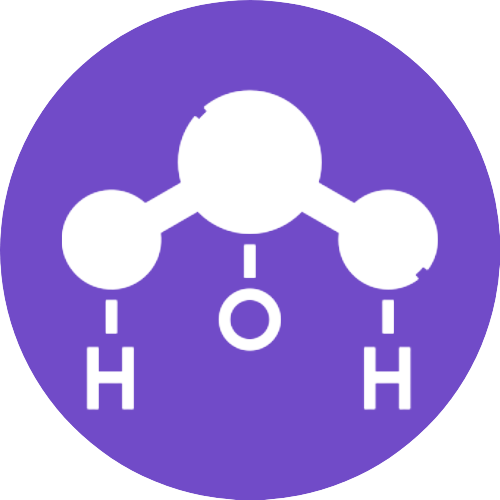
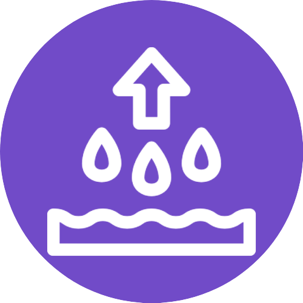
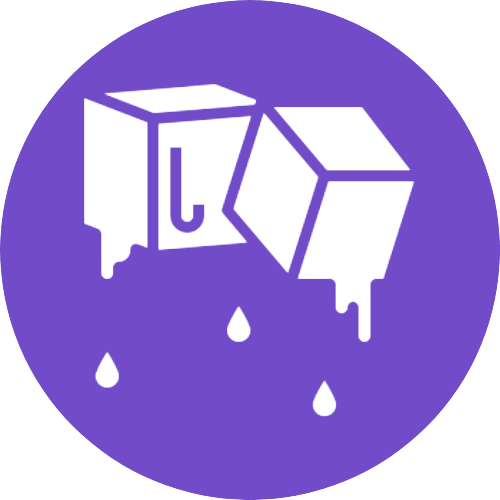
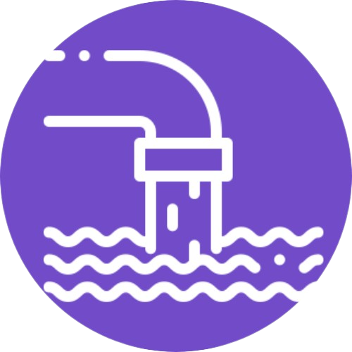

A água
Saiba mais sobre o recurso fundamental para a vida humana

A água possui um papel significativo no planeta Terra, sendo essencial como componente bioquímico de seres vivos, meio de vida de várias espécies vegetais e animais , como elemento que representa valores sociais e culturais de diversos povos e até como fator de produção de bens de consumo. Ademais, ela compõe 60% a 70% do nosso peso corporal, além de regular a temperatura interna humana e ser essencial para as funções orgânicas. Ou seja, sua ausência poderia causar uma série de problemas para o mundo, tornando-a indispensável.
CARACTERÍSTICAS FÍSICAS E QUÍMICAS DA ÁGUA
-

Fórmula molecular da água: H2O
-

Ponto de ebulição: 100 °C
-

Ponto de fusão: 25°C
FALTA DE ÁGUA POTÁVEL E DOENÇAS
A ausência de água potável e a ingestão de água imprópria para o consumo são fatores que estão diretamente atrelados a uma série de doenças que atingem significativamente a saúde pública, principalmente em locais vulneráveis.
QUE DOENÇAS PODEM SER OCASIONADAS PELA FALTA DE ÁGUA POTÁVEL?
-
Leptospirose
Saiba mais -
Diarreia
Saiba mais -
Hepatite A
Saiba mais -
Cólera
Saiba mais
VOCÊ SABIA QUE...
-
12%
da água do mundo está no Brasil
-
71%
do planeta é coberto por água
-
1 semana
é a quantidade de tempo que uma pessoa consegue viver sem água
-

40%
da água disponibilizada para consumo no Brasil é desperdiçada